Вкладка «Файл»
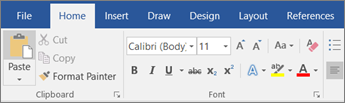
Рис. 1. Чтобы открыть Backstage (вкладку «Файл»), нажмите кнопку File в левом верхнем углу Word.
Карта всех команд вкладки «Файл»
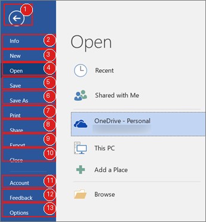
Рис. 2. Полная карта левого меню Backstage в Word (интерфейс Office 2019/2020).
- 1 — Вернуться в документ (стрелка назад)
- 2 — Info
- 3 — New
- 4 — Open
- 5 — Save
- 6 — Save As
- 7 — Print
- 8 — Share
- 9 — Export
- 10 — Close
- 11 — Account
- 12 — Feedback
- 13 — Options
1) Info — информация и защита документа
Показывает свойства документа, инструменты защиты, проверки и управления версиями/восстановлением.
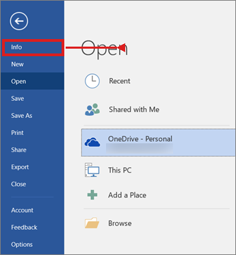
Рис. 3. Нажмите пункт Info.
Как использовать:
- Откройте File → Info.
- Проверьте свойства файла: автор, размер, дата изменения.
- Используйте Protect Document для ограничения доступа (например, пароль или запрет редактирования).
- Используйте Inspect Document, если нужно удалить личные данные перед отправкой.
- Если Word завершился некорректно, проверьте восстановленные версии в блоке управления документом.
2) New — создание нового документа
Создаёт новый пустой документ или документ по шаблону.
Как использовать:
- Откройте File → New.
- Выберите Blank document для чистого документа.
- Либо выберите шаблон (резюме, отчёт, письмо и т.д.).
- При необходимости используйте поиск шаблонов в верхней части окна.
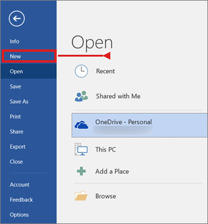
Рис. 5. Стартовая страница Word: быстрый выбор шаблона или пустого документа.
3) Open — открытие существующего файла
Открывает недавние документы, файлы с OneDrive/SharePoint или локального диска.
Как использовать:
- Откройте File → Open.
- Выберите файл из списка Recent.
- Если файла нет в списке — нажмите Browse и найдите документ в папке.
- Используйте закрепление (pin), чтобы важные файлы всегда были сверху списка Recent.
4) Save — быстрое сохранение
Сохраняет текущие изменения в том же файле и в том же месте.
Как использовать:
- Во время работы нажимайте Ctrl+S регулярно (лучше каждые 2–5 минут).
- Если документ уже сохранялся, Save просто обновляет этот же файл.
- Если документ новый и ещё без имени — Word предложит окно выбора имени и места (фактически Save As).
5) Save As — сохранение под новым именем/в новом месте
Создаёт отдельную копию документа: с новым именем, форматом или расположением.
Как использовать:
- Откройте File → Save As (или клавишу F12).
- Выберите место (OneDrive, This PC, нужную папку).
- Введите новое имя файла.
- При необходимости смените тип файла (например, DOCX → DOC/RTF/PDF).
- Подтвердите сохранение.
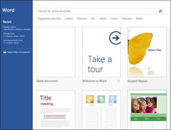
Рис. 10. Окно сохранения: можно выбрать локацию и сделать её локацией по умолчанию.
6) Print — печать и предпросмотр
Позволяет выбрать принтер, диапазон страниц, ориентацию, двустороннюю печать и увидеть предпросмотр.
Как использовать (пошагово):
- Откройте File → Print (или Ctrl+P).
- Проверьте выбранный принтер и число копий.
- В блоке Settings задайте: какие страницы печатать, ориентацию, двустороннюю печать, размер бумаги.
- Перед запуском обязательно просмотрите страницы справа в окне предпросмотра.
- Нажмите Print только после визуальной проверки макета.
7) Share — совместная работа и отправка
Даёт инструменты передачи документа другим пользователям (ссылка, приглашение, отправка копии — зависит от сборки и аккаунта).
Как использовать:
- Откройте File → Share.
- Выберите способ: поделиться ссылкой или отправить копию.
- Задайте права доступа (только просмотр или редактирование).
- Отправьте документ конкретным адресатам.
8) Export — экспорт в другие форматы
Экспортирует документ в PDF/XPS и позволяет изменить тип файла.
Как использовать:
- Откройте File → Export.
- Выберите Create PDF/XPS, если нужен «неизменяемый» вариант для сдачи.
- Либо выберите изменение типа файла, если нужен старый формат (например, .doc).
- Проверьте итоговый файл после экспорта (открывается ли и корректно ли выглядит).
9) Close и возврат в документ
Close закрывает текущий документ, но само приложение Word может остаться открытым.
Как использовать:
- Если нужно закрыть только документ — используйте File → Close.
- Если нужно просто выйти из Backstage обратно к тексту — нажмите стрелку назад в левом верхнем углу.
- Если документ не сохранён, Word запросит подтверждение сохранения.
10) Account / Feedback / Options
Account — управляет учётной записью и подключёнными облачными сервисами; Feedback — отправляет отзыв команде Microsoft; Options — открывает все основные параметры Word.
Как использовать:
- В Account проверьте, под каким аккаунтом вы вошли, и доступно ли облако OneDrive.
- В Feedback можно отправлять сообщения о проблемах интерфейса или предложениях.
- В Options: в разделе Save настройте автосохранение и путь по умолчанию; в Proofing проверьте параметры орфографии и грамматики; в Language задайте языки редактирования.
Полезные горячие клавиши
- Alt+F — открыть вкладку «Файл» (Backstage).
- Ctrl+S — сохранить изменения.
- F12 — Save As (сохранить копию/в другое место).
- Ctrl+P — печать и предпросмотр.
- Esc — выход из некоторых диалогов/режимов.
- Alt+F4 — закрыть окно приложения.
Вкладка «Главная»
1 Введение
Вкладка «Главная» в Microsoft Word — это основной командный центр для ежедневного редактирования и форматирования текста. На ней собраны наиболее часто используемые инструменты, логически сгруппированные в пять основных блоков, расположенных в верхней части документа: Буфер обмена, Шрифт, Абзац, Стили и Редактирование.
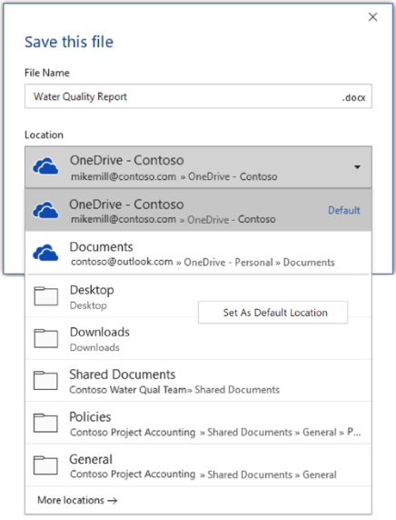
Рис. 1. Основные блоки
1.1 Буфер обмена
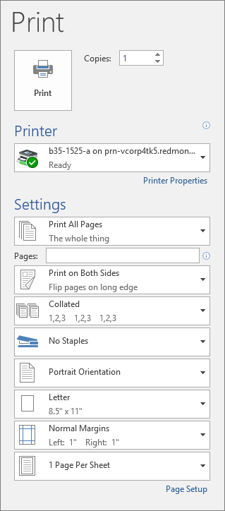
Рис. 2. Буфер обмена
Эта группа отвечает за базовые операции по перемещению и копированию контента.
- Вставить (Ctrl + V): Добавляет содержимое из буфера обмена. Кнопка имеет выпадающее меню с параметрами вставки: сохранить исходное форматирование, объединить форматирование или оставить только текст.
- Вырезать (Ctrl + X): Удаляет выделенный фрагмент из документа, перемещая его в буфер обмена.
- Копировать (Ctrl + C): Создает копию выделенного фрагмента в буфере обмена.
- Формат по образцу (Ctrl + Shift + C): Инструмент с иконкой кисточки. Копирует оформление выделенного текста (шрифт, цвет, интервалы) и применяет его к другому фрагменту. Для однократного применения нужно кликнуть один раз, для многократного — дважды.
- Диалоговое окно «Буфер обмена»: При нажатии квадратика в нижнем левом углу блока «Буфер обмена» открывается панель, где хранится до 24 скопированных элементов, доступных для вставки в любой момент.
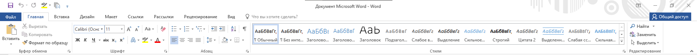
Рис. 3. Диалоговое окно «Буфер обмена»
1.2 Шрифт
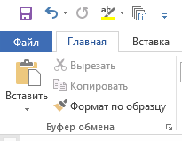
Рис. 4. Шрифт
Здесь собраны все инструменты для управления внешним видом символов.
- Тип и размер шрифта: Выбор гарнитуры и кегля из выпадающих списков или ввод вручную.
- Увеличение / Уменьшение размера: Быстрая настройка кегля с заданным шагом.
- Регистр (Aa): Изменение регистра выделенного текста (все строчные, ВСЕ ПРОПИСНЫЕ, Начинать С Прописных и т.д.).
- Очистить формат: Удаляет всё применённое оформление, возвращая текст к стилю «Обычный».
- Начертание: Полужирный (Ctrl + B), Курсив (Ctrl + I), Подчёркнутый (Ctrl + U).
- Зачёркивание: Применяет перечёркивание текста.
- Подстрочный / Надстрочный: Создание нижних и верхних индексов.
- Текстовые эффекты и оформление: Добавление теней, свечения, контура и отражения для создания художественных заголовков.
- Цвет выделения и текста: Заливка фона маркером и изменение цвета букв.
- Диалоговое окно «Шрифт» (Ctrl + D): Открывает расширенные настройки, включая вкладку «Дополнительно» для управления межзнаковым интервалом и кернингом.
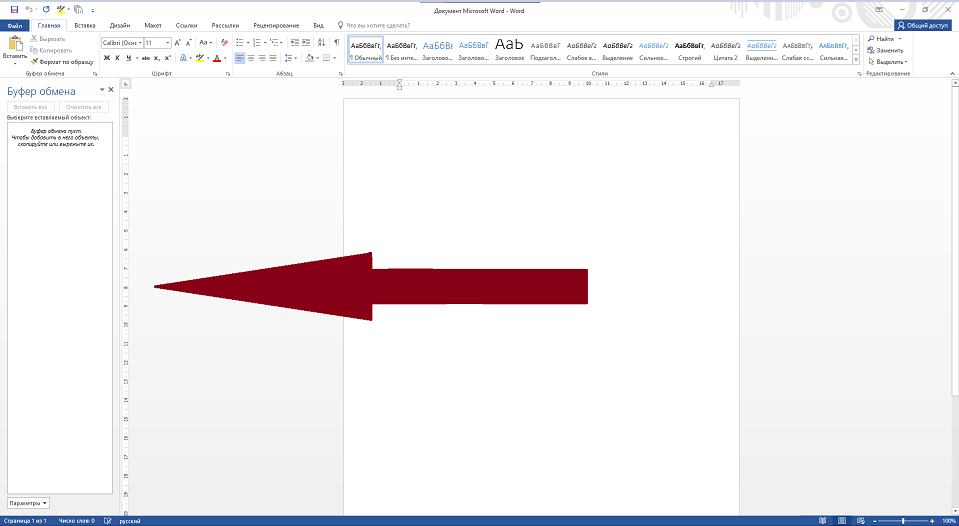
Рис. 5. Диалоговое окно «Шрифт»
1.3 Абзац
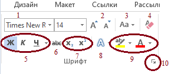
Рис. 6. Абзац
Инструменты этой группы управляют структурой и позиционированием целых абзацев.
- Маркеры, Нумерация, Многоуровневый список: Создание визуальных перечней. Многоуровневый список критически важен для создания юридических или иерархических структур документов.
- Уменьшить / Увеличить отступ: Смещение текста от левого поля. Работает в паре с клавишей Tab (увеличить) и Shift + Tab (уменьшить).
- Сортировка: Упорядочивание выделенных абзацев или строк таблицы по алфавиту (А-Я) или по значению.
- Отобразить все знаки (¶): Включение режима непечатаемых символов. Показывает пробелы, концы абзацев и табуляцию.
- Выравнивание: По левому краю (Ctrl + L), По центру (Ctrl + E), По правому краю (Ctrl + R), По ширине (Ctrl + J).
- Междустрочный интервал: Настройка расстояния между строками внутри абзаца.
- Заливка и Границы: Фоновая подложка для текста и создание рамок вокруг абзаца или страницы.
- Диалоговое окно «Абзац»: Центр тонких настроек. Здесь задаются точные отступы, интервалы и управление висячими строками.
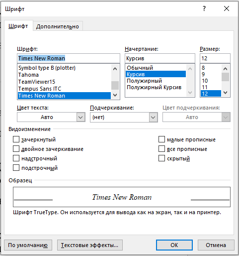
Рис. 7. Диалоговое окно «Абзац»
1.4 Стили
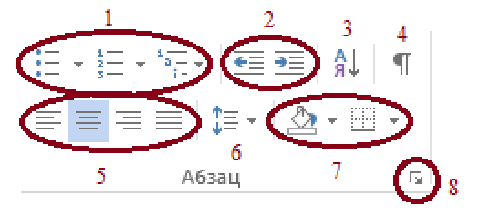
Рис. 8. Стили
Галерея предустановленных комбинаций форматирования. Вместо ручной установки шрифта 14pt, полужирного начертания и цвета, достаточно применить стиль «Заголовок 1».
Ключевая особенность: Использование стилей — это не просто оформление, это создание структуры документа. Только текст, оформленный стилями «Заголовок», может быть автоматически собран в Оглавление на вкладке «Ссылки». Без стилей навигация по большому документу и его автосборка невозможны.
1.5 Редактирование
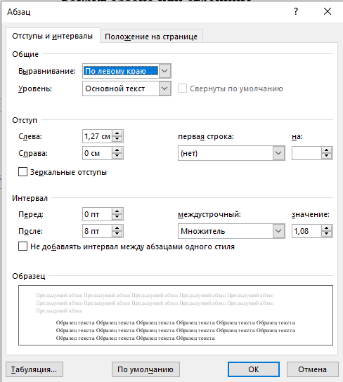
Рис. 9. Редактирование
Функции поиска и замены информации в масштабах всего документа.
- Найти (Ctrl + F): Открывает панель навигации для поиска слов или фраз в тексте.
- Заменить (Ctrl + H): Массовая замена одного текста на другой. Например, замена двойных пробелов на одинарные или смена фамилии во всём договоре.
- Выделить: Быстрое выделение всего текста документа (Ctrl + A) или объектов определённого типа.
2 Буфер обмена (Расширенно)
2.1 Вставка с настройками
Просто нажать Ctrl + V или верхнюю половину кнопки — это быстрый способ. Но у него есть нюансы. Для точного контроля нужно использовать нижнюю половину кнопки «Вставить» (стрелочка под ней).
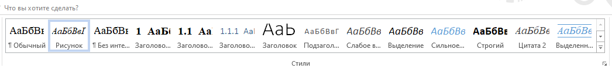
Рис. 10. Окно «Вставить»
Что можно сделать:
- Сохранить исходное форматирование: Текст вставится точно таким же шрифтом и размером, как в источнике.
- Объединить форматирование: Word подстроит вставляемый текст под шрифт и размер текущего абзаца, но сохранит выделение жирным/курсивом.
- Сохранить только текст (Кнопка с буквой A и кисточкой): Удаляет всё форматирование (цвета, таблицы, ссылки, картинки). Получается «чистый» текст.
- Специальная вставка: Открывает окно с выбором формата.
2.2 Формат по образцу
Инструмент с иконкой кисточки (Ctrl+Shift+C для копирования стиля, Ctrl+Shift+V для вставки) позволяет скопировать всё оформление: шрифт, отступы, цвет, межстрочный интервал — и перенести на другой текст.
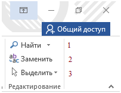
Рис. 11. Кисточка
2.3 Расширенный Буфер обмена
Это хранилище, которое помнит до 24 последних скопированных фрагментов (текст, картинки, скриншоты). Оно работает поверх всех программ Office.
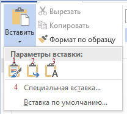
Рис. 12. Расширенный буфер обмена
3 Шрифт (Дополнительно)
Вкладка «Дополнительно» (Межзнаковый интервал): Это самая важная часть для верстальщика и дизайнера. Позволяет настраивать масштаб, интервал (разреженный/уплотненный) и смещение текста.
4 Абзац (Дополнительно)
Работа со значком абзаца (¶) и расширенные функции выравнивания и заливки.
5 Стили (Расширенно)
5.1 Галерея стилей
На ленте вы видите набор цветных плиток («Обычный», «Без интервала», «Заголовок 1» и т.д.). Это галерея экспресс-стилей.
5.2 Кнопки «Открыть галерею» и «Панель стилей»
Галерея на ленте показывает лишь малую часть доступных стилей. Чтобы увидеть всё богатство выбора, нужно открыть полную панель.
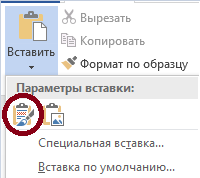
Рис. 13. Диалоговое окно «Стили»
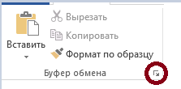
Рис. 14. «Все стили»
5.3 Создание и изменение стиля
Пошаговая инструкция создания нового стиля:
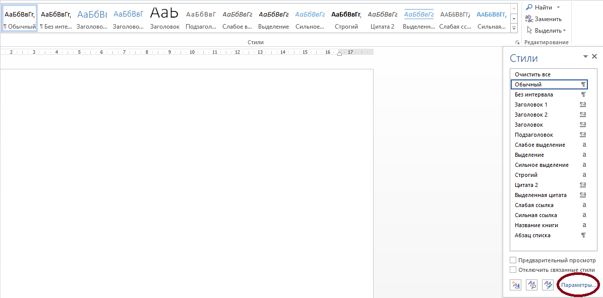
Рис. 15. «Создать стиль»
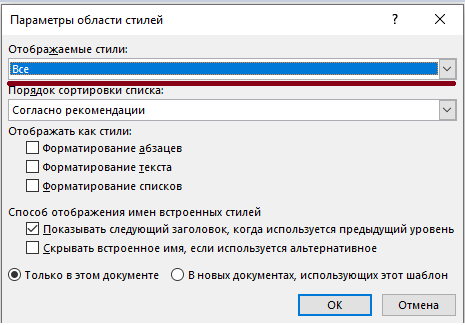
Рис. 16 «Изменить»
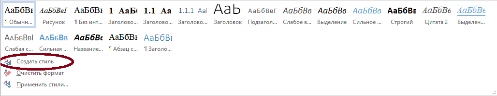
Рис. 17. «Формат»
5.4 Обновление стиля по образцу
Это способ «научить» Word новому виду старого стиля без копания в меню.
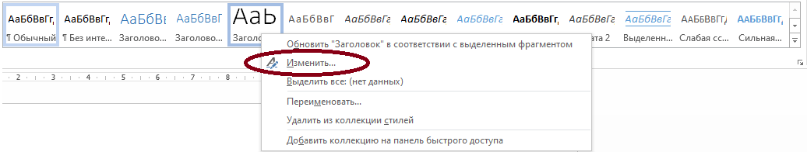
Рис. 18. «Обновить в соответствии с выделенным фрагментом»
6 Редактирование (Расширенно)
6.1 Кнопка «Найти»
В современных версиях Word это целая панель навигации.
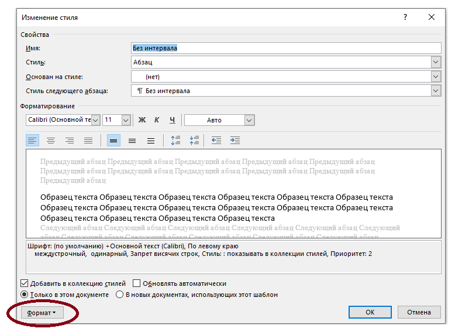
Рис. 19. «Навигация»
6.2 Кнопка «Заменить»
Массовая замена текста и оформления.
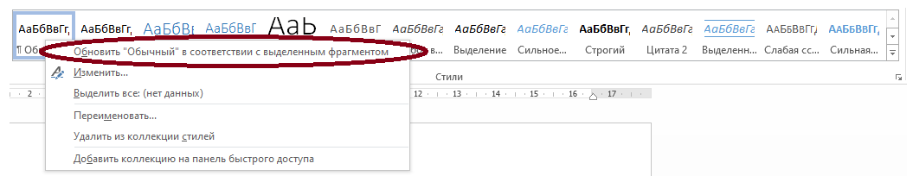
Рис. 20. Диалоговое окно «Найти и заменить»
6.3 Кнопка «Выделить»
Имеет два режима работы: Выделить всё и Выбор объектов (Секретное оружие для работы с графикой).
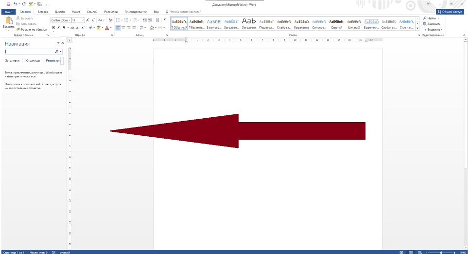
Рис. 21. «Выделить»
Вкладка «Вставка»
1 Введение
Вкладка «Вставка» — это главное место в Word, где добавляются новые объекты в документ: от таблиц и картинок до формул и колонтитулов. В отличие от вкладки «Главная» (где вы форматируете существующий текст), здесь вы расширяете документ новыми элементами.
Ключевая идея: если чего-то нет в документе, но нужно добавить — идите на вкладку «Вставка».
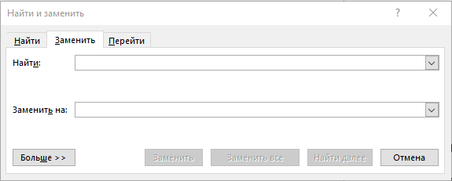
Рис. 1. Основные блоки
2 Страницы
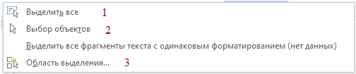
Рис. 2. Страницы
2.1 Титульная страница
Вставляет готовый, красиво оформленный титульный лист (с рамками, полями для заголовка, автора, даты). Скрытая возможность: После вставки титульной страницы Word автоматически нумерует основную часть документа с 1, не затрагивая титул.
2.2 Пустая страница
Вставляет разрыв страницы + новый пустой абзац в месте курсора. При вставке пустой страницы форматирование не «плывёт» при последующем редактировании.
2.3 Разрыв страницы
Перемещает весь текст, стоящий после курсора, на новую страницу. Используется перед новой главой, приложением, или когда нужно принудительно начать текст на чистом листе. (Горячая клавиша: Ctrl + Enter).
3 Таблицы
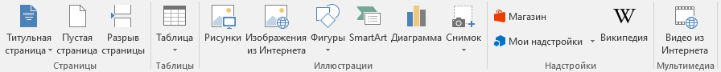
Рис. 3. Таблицы
Это один из самых мощных инструментов в Word. 4 способа вставки:
- Сеткой — навести мышкой на нужное количество ячеек (например, 5×3).
- Вставить таблицу — задать точное число строк и столбцов, ширину столбцов.
- Нарисовать таблицу — карандашом нарисовать любую сложную структуру.
- Excel-таблица — вставляет лист Excel внутрь Word (двойной клик — открывается Excel).
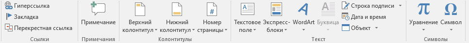
Рис. 4. Вставка таблицы
4 Иллюстрации
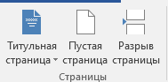
Рис. 4. Иллюстрации
Это сердце визуального контента в Word.
4.1 Рисунки
Вставляет изображение с вашего компьютера (Форматы: JPG, PNG, GIF, SVG, BMP). После вставки появляется вкладка «Формат рисунка» → можно обрезать, добавить тень, рамку.
4.2 Фигуры
Рисует линии, прямоугольники, стрелки, блок-схемы, выноски.
- Нажмите Shift во время рисования → получите идеальный круг или квадрат.
- Дважды кликните на готовую фигуру → можно добавить текст внутрь фигуры.
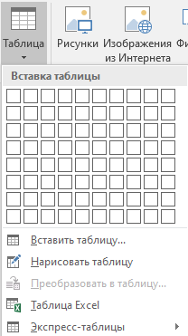
Рис. 5. Фигуры
4.3 SmartArt
Превращает скучные списки в визуальные схемы: Иерархия, Процесс, Цикл, Матрица, Пирамида.
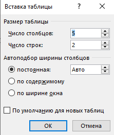
Рис. 6. SmartArt
4.4 Диаграмма
Вставляет график, гистограмму, круговую диаграмму, линейчатую диаграмму. Важно: Автоматически открывается маленький Excel → вы меняете числа там → диаграмма в Word обновляется сама.
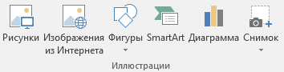
Рис. 7. Вставка диаграммы
4.5 Снимок экрана
Делает скриншот открытого окна или выделенной области.
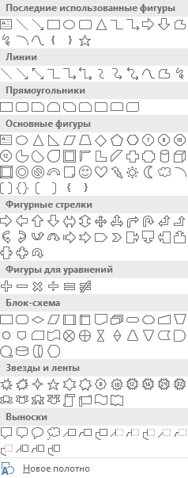
Рис. 8. Вырезка экрана
5 Текст
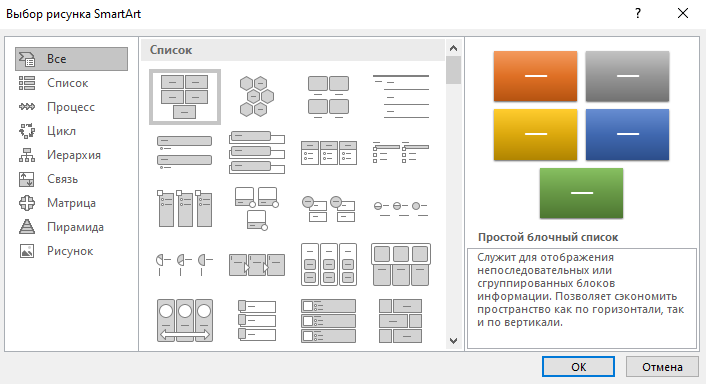
Рис. 9. Стили
5.1 Надпись
Создаёт плавающий текстовый блок, который можно перетаскивать куда угодно. Идеально для: подписей к рисункам, вставки «Важно!», боковых заметок.
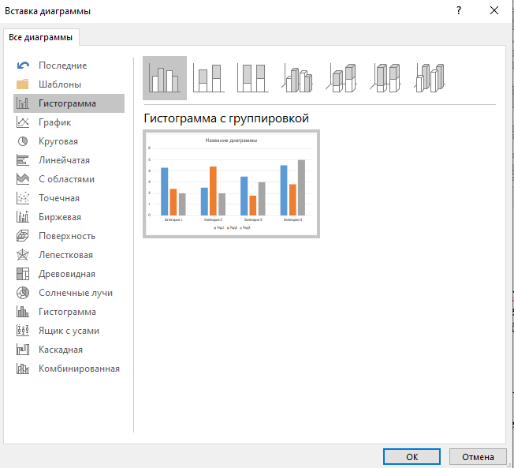
Рис. 10. Добавление надписи
5.2 Экспресс-блоки
Сохраняет любой фрагмент текста/таблицы/рисунка как готовый шаблон, чтобы вставить в один клик позже.
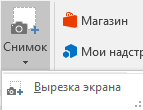
Рис. 11. Экспресс-блоки
5.3 WordArt
Создаёт эффектный заголовок с тенью, наклоном, обводкой, объёмом. WordArt — это графический объект, его можно вращать, растягивать, накладывать на картинку.
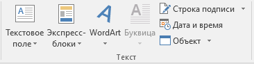
Рис. 12. WordArt
6 Колонтитулы
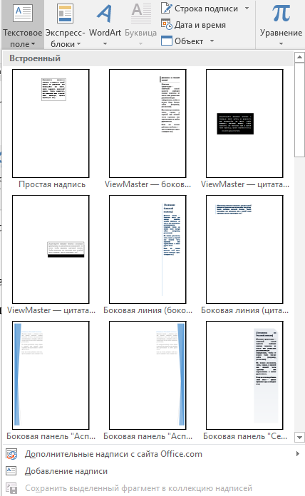
Рис. 13. Колонтитулы
Редактирует верхний и нижний колонтитулы (информация, повторяющаяся на каждой странице: номер страницы, название, логотип, дата).
7 Символы
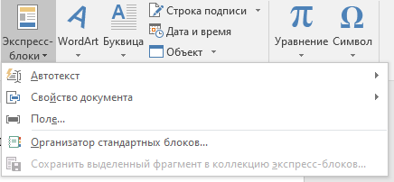
Рис. 17. Символы
7.1 Символ
Добавляет знаки, которых нет на клавиатуре (©, ®, ™, €, математические символы).
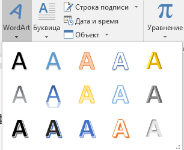
Рис. 18. Символ
7.2 Уравнение
Позволяет красиво записывать математические формулы (дроби, интегралы, матрицы, корни). Горячая клавиша: Alt + =.
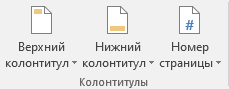
Рис. 19. Уравнение
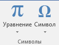
Рис. 20. Конструктор уравнений
Вкладка «Дизайн» (Конструктор)
1. Введение
Вкладка «Дизайн» (в некоторых версиях «Конструктор») отвечает за общее визуальное оформление всего документа на высоком уровне. С её помощью задаются: единый стиль заголовков и основного текста, цветовую гамму и шрифты, фон, водяные знаки, границы страниц, согласованность всей структуры документа.
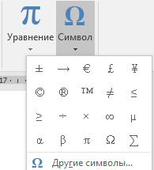
Рис. 1. Основные блоки
2. Группа «Форматирование документа»
2.1 Темы
Кнопка «Темы» применяет к документу единый комплект настроек оформления: цветовую схему, парные шрифты, эффекты для фигур и набор стилей. Можно восстановить тему шаблона.
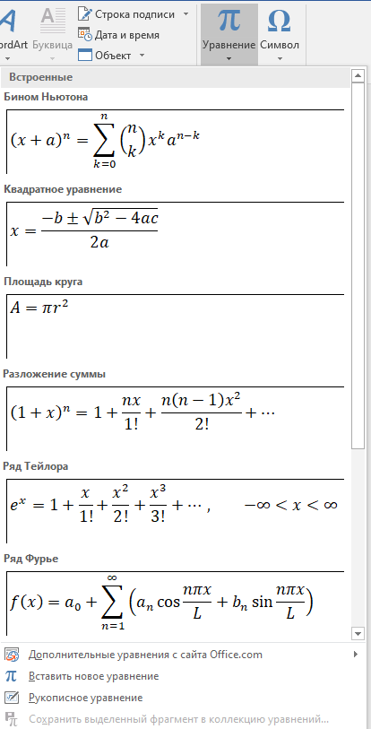
Рис. 2. Темы
2.2 Наборы стилей
Выпадающая галерея с готовыми шаблонами (например, «Деловой», «Простой»). При наведении документ мгновенно меняет внешний вид. Позволяют изменять визуальное оформление стилей абзацев и символов.
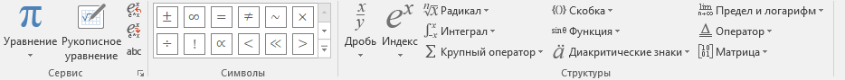
Рис. 3. Набор стилей
2.3 Цвета
Открывает наборы из 6–10 цветов. Меняет цветовую схему темы, что влияет на цвет текста, заливки таблиц и гиперссылок.
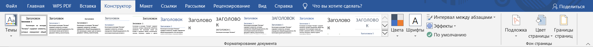
Рис. 4. Набор стилей
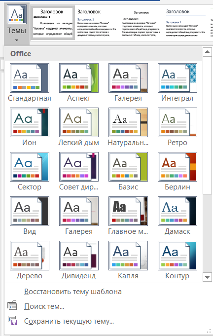
Рис. 5. Окно создания новых цветов темы
2.4 Шрифты
Меняет парный набор шрифтов темы (шрифт для заголовков и шрифт для основного текста).
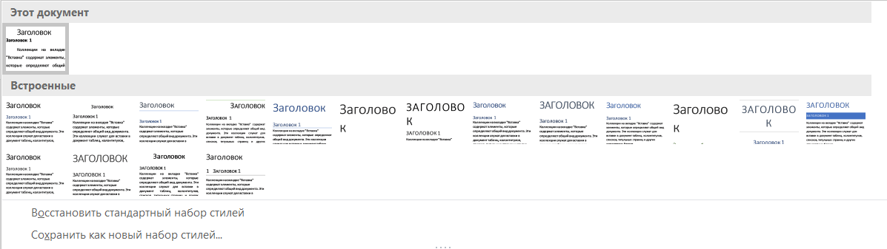
Рис. 6. Вкладка «Шрифты»
Рис. 7. Окно создания новых шрифтов темы
2.5 Интервалы между абзацами
Меняет вертикальные отступы до и после абзацев, а также межстрочный интервал у всех стилей документа одновременно.
Рис. 8. Окно выбора интервала между абзацами
Рис. 9. Управление стилями, вкладка «По умолчанию»
Рис. 10. Управление стилями, вкладка «Изменение»
Рис. 11. Управление стилями, вкладка «Рекомендации»
Рис. 12. Управление стилями, вкладка «Рекомендации»
Рис. 13. Инструмент импорта/экспорта стилей
2.6 Эффекты
Меняет визуальные эффекты для графических объектов (Тени, Скосы/фаски, Отражение, Заливки градиентов). Не влияет на текст.
Рис. 14. Окно выбора эффекта
2.7 По умолчанию
При нажатии на кнопку изменяет стиль документа по умолчанию для всех новых документов.
Рис. 15. Окно подтверждения изменения стиля по умолчанию
3. Группа «Фон страницы»
3.1 Подложка
Предоставляет возможность создать на каждом листе документа полупрозрачный водяной знак («Образец», «Черновик»).
Рис. 16. Окно выбора подложки
Рис. 17. Окно настройки подложки
Рис. 18. Окно выбора изображения
3.2 Цвет страницы
Заливает фон страницы сплошным цветом, градиентом, текстурой или узором.
Рис. 19. Палитра цветов страницы
Рис. 20. Заранее заготовленные цвета
Рис. 21. Ручная настройка цвета
Рис. 22. Окно выбора способа заливки, вкладка «Градиентная»
Рис. 23. Окно выбора способа заливки, вкладка «Текстура»
Рис. 24. Окно выбора способа заливки, вкладка «Узор»
Рис. 25. Окно выбора способа заливки, вкладка «Рисунок»
3.3 Границы страниц
Добавляет рамку вокруг каждой страницы документа (или вокруг отдельных разделов).
Рис. 26. Окно «Границы страниц», вкладка «Граница»
Рис. 27. Окно «Границы страниц», вкладка «Страница»
Рис. 28. Окно «Границы страниц», вкладка «Заливка»
Вкладка «Макет» (Разметка страницы)
1. Введение
Вкладка «Макет» в Microsoft Word (в некоторых версиях — «Разметка страницы») — это центр управления физическими параметрами документа: полями, ориентацией, колонками, разрывами, а также расположением объектов относительно текста.
1.1. Параметры страницы
Эта группа отвечает за глобальную геометрию листа: от полей до разбивки на колонки.
1.2. Абзац
Здесь представлены точные настройки отступов и интервалов между абзацами.
1.3. Упорядочение
Инструменты для работы с плавающими объектами: картинками, фигурами, диаграммами. Управление слоями, обтеканием и взаимным расположением.
2. Параметры страницы
2.1. Поля
Поля — это пустое пространство от края листа до текста. По умолчанию Word устанавливает поля: левое — 3 см, остальные — по 2 см. Для тонкой настройки выберите «Настраиваемые поля».
2.2. Ориентация
Два режима расположения листа: Книжная (вертикальное) и Альбомная (горизонтальное). Важно: Ориентация применяется ко всему документу или к текущему разделу.
2.3. Размер
Выбор формата бумаги для печати. По умолчанию — А4 (210×297 мм).
2.4. Колонки
Разбивает выделенный текст на несколько вертикальных столбцов, как в газетах или журналах. Текст перетекает из левой колонки в правую автоматически.
2.5. Разрывы
Это самый важный инструмент для профессиональной вёрстки. Никогда не переходите на новую страницу многократным нажатием Enter — используйте разрывы. Разрывы позволяют жёстко разграничивать части документа. Особо важны Разрывы разделов, так как раздел — это часть документа, у которой можно задать свои параметры: поля, ориентацию, колонтитулы, номера страниц.
2.6. Номера строк
Автоматическая нумерация строк на полях (не страниц, а именно строк). Очень полезно для юристов, сценаристов, редакторов.
2.7. Расстановка переносов
Убирает большие «дырки» (пробелы) между словами при выравнивании текста по ширине, разбивая длинные слова на слоги (режимы: Авто, Нет, Вручную).
2.8. Диалоговое окно «Параметры страницы»
Это «центр управления полётами» всей геометрии документа. Настройка переплета, зеркальных полей для двусторонней печати и особых колонтитулов для первой страницы.
3. Абзац
3.1. Отступы
Позволяют задать расстояние от левого и правого поля страницы до абзаца точно в сантиметрах.
3.2. Интервалы
Расстояния между абзацами (не путать с межстрочным интервалом). Профессионалы никогда не делают отступы пустыми строками (Enter), потому что при изменении размера шрифта такие пустые строки «поедут». Вместо этого используют настройки интервалов «Перед» и «После».
3.3. Диалоговое окно «Абзац»
Вкладка «Положение на странице» критически важна для чистовика: Запрет висячих строк, Не отрывать от следующего (для заголовков), Не разрывать абзац.
4. Упорядочение
Эта группа предназначена для работы с объектами: рисунками, фигурами, диаграммами, текстовыми полями.
- Положение: Быстрая привязка плавающего объекта к определённому месту страницы (углам, центру) с автоматическим обтеканием текстом.
- Обтекание текстом: Настраивает способ взаимодействия текста и объекта (В тексте, Вокруг рамки, По контуру, Сквозь, За текстом, Перед текстом).
- Переместить вперед / На задний план: Управляет слоями объектов (Z-индекс).
- Область выделения: Это «инспектор слоёв», показывающий список всех объектов на текущей странице. Можно скрывать/показывать объекты, переименовывать их и менять порядок наложения.
- Выровнять и Сгруппировать: Объединяет несколько объектов в один составной объект для их совместного перемещения и масштабирования.
Вкладка «Ссылки»
1. Оглавление
Инструменты этой группы позволяют создать автоматическое содержание документа. Для корректной работы необходимо предварительно оформить заголовки с помощью стилей «Заголовок 1», «Заголовок 2» и т.д.
- Кнопка «Оглавление»: Вставляет в позицию курсора готовый блок содержания. Word сканирует документ и собирает из него список с номерами страниц.
- Кнопка «Добавить текст»: Принудительно включает выделенный абзац в оглавление.
- Кнопка «Обновить таблицу»: Приводит оглавление в соответствие с текущим состоянием документа. Важно нажимать её после редактирования текста.
2. Сноски
Сноски — это примечания, пояснения или ссылки на источники, размещаемые внизу страницы (обычные) либо в конце документа или раздела (концевые).
- Кнопка «Вставить сноску»: Добавляет надстрочный номер в тексте и перемещает курсор в нижний колонтитул страницы.
- Кнопка «Вставить концевую сноску»: Текст примечания помещает в самый конец документа.
- Диалоговое окно «Сноски»: Расширенные настройки положения и формата номера.
3. Ссылки и списки литературы (Библиография)
Инструменты для управления источниками и автоматического оформления списка литературы в соответствии с выбранным стандартом (ГОСТ, APA, MLA и др.).
- Кнопка «Управление источниками»: Открывает «Диспетчер источников» — базу данных всей использованной литературы.
- Поле «Стиль»: Выбирает стандарт оформления.
- Кнопка «Вставить ссылку»: Вставляет в текст ссылку на источник в формате, определяемом выбранным стилем.
- Кнопка «Список литературы»: Вставляет автоматически сформированный, отсортированный и оформленный список всех использованных источников.
4. Названия
Группа предназначена для работы с подписями к рисункам, таблицам и формулам, а также для организации перекрёстных ссылок на них.
- Кнопка «Вставить название»: Добавляет подпись к выделенному объекту (Рисунок 1, Таблица 1).
- Кнопка «Список иллюстраций»: Вставляет перечень всех рисунков и/или таблиц с указанием номеров страниц (аналог оглавления для объектов).
- Кнопка «Перекрестная ссылка»: Создаёт в тексте активную ссылку на другой элемент документа (заголовок, номер рисунка). Ссылка автоматически обновится при нажатии F9.
5. Предметный указатель
Инструменты для создания алфавитного перечня терминов с указанием страниц, на которых они упоминаются (как в конце учебников).
6. Таблица ссылок
Специализированный инструмент для создания перечней ссылок на нормативные, юридические или иные документы (законы, регламенты, ГОСТы).
Вкладка «Рассылки»
Инструменты этой вкладки превращают Word из простого редактора в систему автоматизации. Они позволяют создать один шаблон (например, приглашение на свадьбу или акт выполненных работ) и автоматически размножить его для 10, 100 или 1000 получателей, подставляя индивидуальные данные из таблицы.
1. Создать
Группа предназначена для быстрой подготовки одиночных или серийных почтовых элементов.
- 1.1. Кнопка «Конверты»: Позволяет оформить макет для печати на физическом конверте.
- 1.2. Кнопка «Наклейки»: Создает макет для печати на листах с самоклеящимися этикетками.
2. Начало слияния
Инструменты для настройки связи между текстом в Word и внешним источником данных.
- 2.1. Кнопка «Начать слияние»: Выбор формата итогового документа. Рекомендуется использовать Пошаговый мастер слияния.
- 2.2. Кнопка «Выбрать получателей»: Подключение базы данных (таблица Excel, контакты Outlook или новый список).
- 2.3. Кнопка «Изменить список получателей»: Управление подключенной базой данных (сортировка, фильтрация записей).
3. Составление документа и вставка полей
Группа для расстановки динамических элементов в шаблоне.
- 3.1. Кнопка «Выделить поля слияния»: Подсветка вставленных переменных серым цветом.
- 3.2. Кнопка «Блок адреса»: Автоматическая вставка сложной структуры адреса.
- 3.3. Кнопка «Строка приветствия»: Умное начало письма (например: «Уважаемый [Имя]!»).
- 3.4. Кнопка «Вставить поле слияния»: Ручное добавление данных из колонок вашей таблицы.
- 3.5. Кнопка «Правила»: Добавление логики «Если — то — иначе» для настройки подстановки слов в зависимости от значений полей (например, род глагола от пола).
- 3.6. Кнопка «Подбор полей»: Стыковка названий столбцов вашей базы с системными полями Word.
- 3.7. Кнопка «Обновить наклейки»: Синхронизация дизайна наклеек на листе.
4. Просмотр результатов
- 4.1. Кнопка «Просмотреть результаты»: Режим «маскировки», где поля превращаются в реальные данные (««Имя»» → «Иван»).
- 4.2. Навигация и поиск: Пролистывание базы для проверки верстки.
- 4.3. Кнопка «Поиск ошибок»: Диагностика перед печатью.
5. Завершение
- 5.1. Кнопка «Найти и объединить»: Финальный аккорд процесса. Можно создать новый файл со всеми письмами (для ручной корректировки отдельных документов), распечатать пачку документов или разослать письма через Outlook.
Вкладка «Рецензирование»
Раздел «Рецензирование» (англ. «Review») является центральным инструментом для коллективной работы над документами. Он предназначен для отслеживания изменений, добавления комментариев, сравнения разных версий файлов, защиты документа от несанкционированного редактирования, а также для интеграции с системой заметок Microsoft OneNote.
Рисунок 1 – фрагмент интерфейса от кнопки «Фильтровать всю разметку» до кнопки «Связанные заметки»
1. Фильтровать всю разметку
Позволяет временно скрыть с экрана определённые типы изменений, не удаляя их из документа и не отключая режим отслеживания исправлений.
Рисунок 2 – раскрытое меню «Фильтровать всю разметку»
2. Все исправления / Показать исправления
Эти две команды работают в связке и управляют тем, как именно Word отображает внесённые изменения (вставленный текст, удалённый текст, форматирование, перемещения).
Рисунок 3 – выпадающее меню «Все исправления»
Рисунок 4 – выпадающее меню «Показать исправления»
3. Запись исправлений (Отслеживание изменений)
Команда «Запись исправлений» (Track Changes) является главным инструментом рецензирования. Когда этот режим включён, Word фиксирует абсолютно все изменения, которые вносит пользователь в документ.
Важное предупреждение: Если выключить «Запись исправлений» и начать править документ, Word не запомнит, что и когда вы меняли. Отключение режима не удаляет уже сделанные правки – они остаются в документе.
Рисунок 5 – активная кнопка «Запись исправлений» и пример документа с видимыми правками
4. Сравнить исправления / Сравнение
Предназначена для ситуаций, когда у вас есть две версии одного документа, но вы не знаете, какие именно изменения были сделаны. Word последовательно анализирует исходный и изменённый документы и создаёт третий результирующий файл с правками.
Рисунок 6 – диалоговое окно «Сравнение версий» с двумя полями для выбора документов
5. Защитить
Команда «Защитить» (Protect) устанавливает ограничения на редактирование документа (Только чтение, Только примечания, Отслеживание исправлений). Критическое предупреждение: Word не имеет механизма восстановления утерянного пароля!
Рисунок 7 – боковая панель «Ограничить редактирование» с выбором типа защиты
6. Скрыть рукописные фрагменты
Команда «Скрыть рукописные фрагменты» (Hide Ink) относится к устройствам с сенсорным вводом. Временно скрывает рисунки пером поверх текста, возвращая документ к чистому виду.
Рисунок 8 – пример документа: слева с видимыми рукописными пометками, справа – после нажатия «Скрыть рукописные фрагменты»
7. Связанные заметки (OneNote)
Обеспечивает интеграцию между Microsoft Word и приложением Microsoft OneNote. Создаёт динамическую связь между фрагментом документа и страницей заметок.
Рисунок 9 – боковая панель OneNote с открытой привязкой к документу Word
Вкладка «Вид»
Введение
Вкладка «Вид» в Microsoft Word — это центр управления тем, как документ отображается на экране. В отличие от вкладки «Макет», которая меняет физические параметры страницы, «Вид» влияет исключительно на удобство работы пользователя: режим просмотра, масштаб, показ вспомогательных элементов интерфейса, способ прокрутки и организацию окон.
1. Режимы просмотра
- 1.1. Разметка страницы: Режим по умолчанию. Документ отображается так, как он будет выглядеть на печати.
- 1.2. Веб-документ: Показывает, как документ будет выглядеть, если его сохранить как веб-страницу (сплошной непрерывной лентой без полей).
- 1.3. Черновик: Минималистичный режим. Отображается только текст. Полезно для работы с очень большими файлами (режим экономит ресурсы ПК).
- 1.4. Режим чтения: Полноэкранный режим для чтения с экрана, страницы перелистываются по горизонтали, лента скрыта.
2. Иммерсивный режим
Специальный инструмент для повышения читабельности и доступности текста. Настройки включают: Ширина столбца, Цвет страницы (сепия, темный), Фокус строки (затемняет остальной текст), Интервал текста, Слоги, Читать вслух (голосовое озвучивание).
3. Перемещение между страницами
- 3.1. Навигация по вертикали: Стандартная непрерывная лента.
- 3.2. По горизонтали: Страницы располагаются рядом и перелистываются слева направо (удобно на планшетах).
4. Отображение
- 4.1. Линейка: Включает горизонтальную и вертикальную линейки для регулировки отступов (красной строки).
- 4.2. Сетка: Координатная сетка на листе (как миллиметровка) для выравнивания фигур.
- 4.3. Область навигации: Вертикальная панель слева. Содержит 3 вкладки: Заголовки (структура для быстрого перехода и перемещения целых глав), Страницы (миниатюры) и Результаты (поиск).
- 4.4. Панель эскизов: Альтернативный способ навигации только с миниатюрами страниц.
5. Масштаб
- 5.1. Масштаб: Задание точного числового значения в процентах.
- 5.2. 100%: Мгновенный возврат к натуральной величине.
- 5.3. Одна страница / Несколько страниц: Подгон масштаба для охвата композиции или разворотов.
- 5.4. По ширине страницы: Удобно для работы с широкими таблицами без прокрутки.
6. Окно
Организация одновременной работы в многооконном режиме.
- 6.1. Новое окно: Открывает второе окно с тем же документом (изменения отражаются во всех окнах синхронно).
- 6.2. Упорядочить все: Размещает открытые окна мозаикой.
- 6.3. Разделить: Делит текущее окно на две независимые области прокрутки (удобно для сверки начала и конца отчета).
- 6.4. Рядом / Синхронная прокрутка: Располагает два окна документа рядом и синхронизирует их прокрутку для удобного построчного сравнения.
7. Макросы и SharePoint
- 7.1. Макросы: Инструмент автоматизации повторяющихся действий (запись команд и воспроизведение по горячей клавише).
- 8.1. Свойства (SharePoint): Открывает область сведений о документе, хранящихся на сервере SharePoint (расширенные метаданные), позволяя редактировать их не покидая Word.